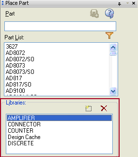

This scenario arises when v16.2 libraries are referenced
through the Place Part dialog in Capture. This occurs
either if v16.2 libraries are configured in the Capture.ini
OR when you select v16.2 libraries through the Add Library
command in the Place Part dialog.

Figure H-4
In this section: